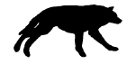

As you fallow Kuron, you see plants that only
exsisted in your dreams. Ferns as big as full
grown wolves and bushes as small as a coconut
are seen all around. Also, there are animals
and monsters of your wildest dreams! From
birds with 2 pairs of wings to ants the size
of a loaf of bread crawls through this
forest. Sometimes you could see shadows
of wolves runing through the forest.

Soon, you come to a large den. The
den is made black and grey stones and
rocks. You walk inside the stone
cave. Kuron sits in the middle of a
round room. Your destany awaits
you. At the end of each pathway,
he says, pointing to pathways.
Each pathway end at a portal, with
a sign above it, destany awaits you.
He teleports and disapears out of
sight.
Portals:
Rules
Join
Thanks To...
Elements and Classes
Members
Main Cave
Battling Grounds
OOC/Suggestions/Questions
Monsters
Updates:
Febuary 22, 2002:
I've started to work on the
ShadowNight Wolves! I haven't
got any message boards up
yet. :(